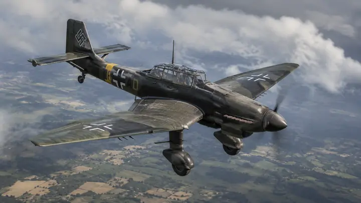

Ju 87 Stuka operations · 1939–1945
The Stuka became a symbol of early Blitzkrieg warfare, but its modelling story runs much wider than France and Poland: Battle of Britain losses, Balkans and Crete, North Africa desert aircraft, Eastern Front D-series ground attack and the Ju 87G Kanonenvogel tank-buster. Its fixed undercarriage, dive brakes, siren, bomb cradle and later 37 mm cannon make it one of the most distinctive aircraft pages on the site.

Role & strengths
- Luftwaffe dive bomber and close-support aircraft
- Poland, France, Battle of Britain, Balkans, North Africa and Eastern Front routes
- Ju 87B classic siren/spatted dive bomber and Ju 87G Kanonenvogel tank-buster
- Large markings, yellow theatre panels, desert dust and winter whitewash
- Heavy underside grime, bomb racks, cannon pods and fixed gear weathering
Key theatres
- Poland, France and early Blitzkrieg campaigns
- Channel/Battle of Britain operations
- Balkans, Crete and Mediterranean support
- North Africa and Eastern Front ground attack
Specification Ju 87B-2
Survivors today

Surviving Stukas are useful for wing geometry, spatted undercarriage, dive brakes, bomb crutch, cockpit glazing, gunner position and cannon-pod detail.
View survivorsTimeline highlights
Build this Ju 87 as…
Pick the mission route first. A Battle of Britain Ju 87B, a Balkans/Crete aircraft, a desert Trop machine, an Eastern Front Ju 87D and a Ju 87G tank-buster all need different fittings and weathering.
Aircraft identity
Ju 87B, D and G airframes differ. Check spats, siren, canopy, radiator, racks and cannon pods before committing to a subject.
Bomb crutches, wing bombs and 37 mm cannon pods must match unit and role. Do not use Kanonenvogel fittings on an early Ju 87B.
Paint scheme cards
Classic early Stuka route for Poland, France and Battle of Britain aircraft.
Yellow cowlings, fuselage bands or lower panels need clean masking and careful toning.
North African Stukas should show dust, filter grime, sun bleaching and dirty undercarriage spats.
Ju 87D/G builds can show mud, snow, cannon grime, exhaust and rough field wear.
Campaign cards
StG 1, StG 2 and StG 77 Ju 87Bs with early RLM 70/71/65, sirens and bomb crutches.
Channel Stukas need early-war finish, yellow IDs and restrained but operational wear.
Trop Stukas need sand, dust, faded upper surfaces and hard-used undercarriage spats.
D/G routes need mud, winter whitewash, cannon pods, heavy staining and rough field maintenance.
Build difficulty and related guides
Medium-high. The greenhouse canopy, fixed gear, bomb crutch and wing geometry need care.
Very high. The long glazed cockpit makes masks almost essential.
High. Spats, bomb racks, cannon pods, underside grime and exhaust need layered treatment.
Ju 87 Sturzkampfgeschwader and Schlachtgeschwader units
Sortable Ju 87 unit cards covering Blitzkrieg dive-bomber units, Battle of Britain, Mediterranean, North Africa, Eastern Front and Ju 87G tank-buster routes.
Ju 87 Stuka operating map
Airfield info
Click a marker to show linked Ju 87 unit cards and modelling notes.
Campaign timeline
Survivors
Books and reference sources
Ju 87 Stuka build guide
Ju 87 Stuka videos, photos and archive material
Media replaces the old separate walkaround tab: cockpit, exhaust, undercarriage, markings, survivor references, archive imagery and video cards are grouped here.